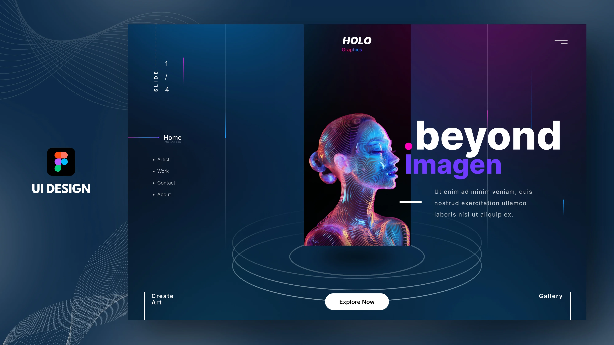

01
Holo graphics
Available for select projects / 2026
Rotondwa Rasivhetshele is a visual designer shaping digital experiences, identities, and images that make people pause.

Selected direction
Every project starts with a question worth making visible.
The short version
I work across design and visual storytelling to turn loose ideas into memorable, useful experiences. My practice is equal parts observation, experimentation, and care.
UI / UX
Visual identity
Creative direction
South Africa
Working globally
Figma
Adobe Creative Suite
Motion + image
The complete picture
Experience, education, and the details behind the work are all in the CV.